Created Tuesday 21 June 2022
Zagadnienia
❖ Co to są prywatne adresy IP? Jakie pule adresów są zarezerwowane na takie adresy?
Są to adresy przeznaczone dla sieci lokalnych. Pakiety o takich adresach nie są przekazywane przez routery, a same adresy mogą powtarzać się między wieloma sieciami. Ich pule to:
- 10.0.0.0/8 (jedna sieć klasy A)
- 172.16.0.0/12 (16 sieci klasy B)
- 192.168.0.0/16 (256 sieci klasy C)
❖ Co robi funkcja bind()?
man mówi, że przypisuje nazwę do gniazda, ale nie jest to zbyt wymowna definicja. W przypisaniu nazwy chodzi tak naprawdę o przypisanie adresu sieciowego do danego gniazda. Przypisany adres może pochodzić z różnych rodzin adresów, np. AF_INET (IP), AF_INET6 (ipv6), itd. Przypisany adres jest zapisywany w strukturze sockaddr.
❖ Czym różnią się porty o numerach mniejszych niż 1024 od innych?
Do wiązania z takim portem za pomocą funkcji bind() potrzebne są uprawnienia administratora. Wynika to z faktu, że są to tak zwane well-known ports (dobrze znane porty), które są zarezerwowane do użytku przez system operacyjny i kluczowe usługi. Udostępnienie ich normalnym użytkownikom byłoby naruszeniem bezpieczeństwa.
❖ Jakie są zadania procesora routingu, portu wejściowego, portu wyjściowego i struktury przełączającej? (może nie być dobrze)
Router składa się następujących części:
- Procesor routingu — otrzymuje niektóre pakiety (RIP, OSPF). Tworzy tablice przekazywania i wysyła je do portów wejściowych.
- Port wejściowy — odbiera pakiet, uaktualnia nagłówki IP (TTL i checksum), sprawdza do którego portu wyjściowego da się go przesłać.
- Port wyjściowy — przesyła pakiety dalej w świat. Jeśli pakiety są zbyt duże (większe niż MTU — maximum transmission unit), dzieli je na fragmenty. Szereguje pakiety w buforze wyjściowym, np. względem priorytetów lub cyklicznie (round-robin).
- Struktura przełączająca --przekazuje pakiety dalej z zadaną (lub przybliżoną) prędkością łącza. Przypomina strukturą sieci Benesa (z AiSDu).
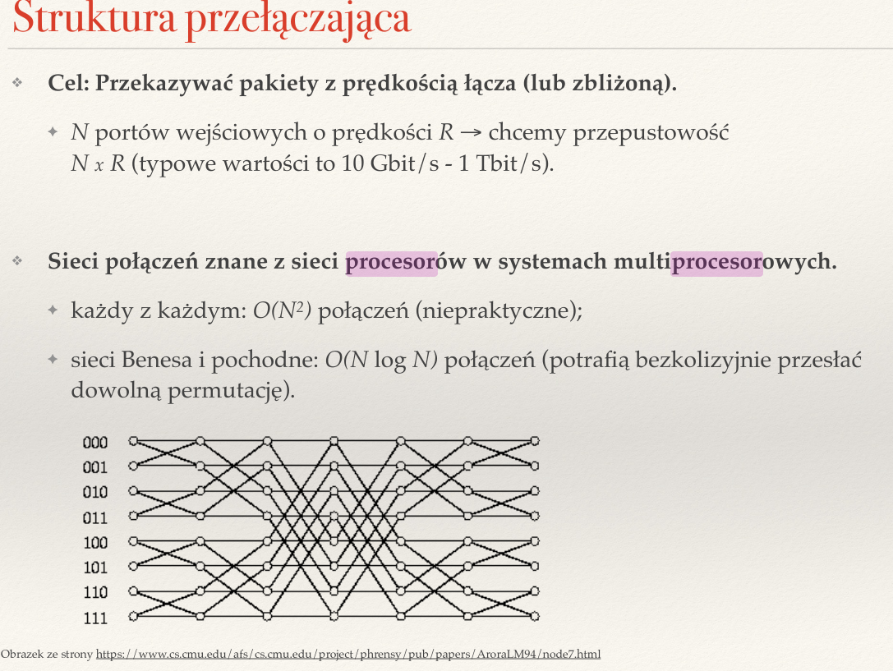
❖ Czym się różni przełączanie pakietów w routerze za pomocą RAM od przełączania za pomocą struktury przełączającej?
We wczesnych generacjach routerów stosowano RAM zamiast struktury przełączającej. Było to rozwiązanie proste i powolne, oparte na przerwaniach. Struktury przełączające pozwalają na przekazywanie pakietów z prędkością zbliżoną drękości łącza, np. dla N portów wejściowych o prędkości R chcemy przepustowość N*R.
Działanie:
- Port wejściowy odbiera pakiet i zgłasza przerwanie.
- Procesor kopiuje pakiet do RAMu.
- Wolny port wyjściowy zgłasza przerwanie.
- Procesor kopiuje pakiet z RAMu.
❖ Jakie są pożądane cechy struktury przełączającej w routerze?
By przekazywała pakiety z prędkością łącza lub zbliżoną (N portów wejściowych o prędkości R to przepustowość N*R). Chcemy też, by potrafiła bezkolizyjnie i szybko przesłać dowolną permutację.
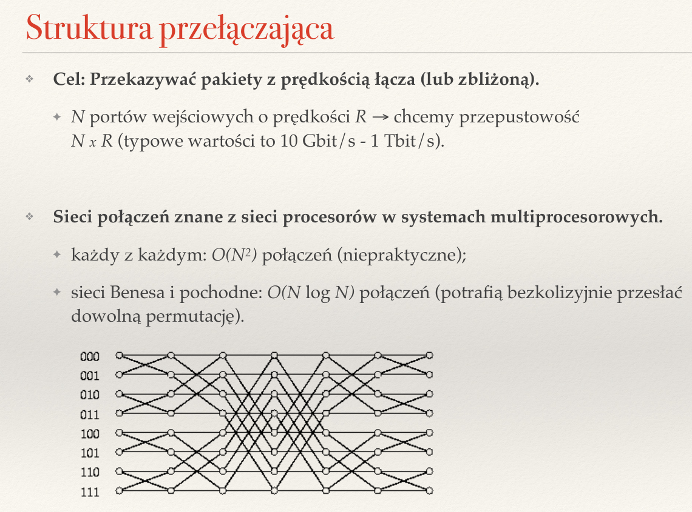
❖ Gdzie w routerze stosuje się buforowanie? Po co?
Przy portach wyjściowych, gdzie zapobiegają utraci pakietów, przy czasowym zwiększeniu liczby pakietów do wysyłki.
Przy portach wejściowych, gdzie pomagają, gdy przepustowość struktury przełączającej jest zbyt niska, pakiety skierowane do zajętych łącz wyjściowych są blokowane. Pojawia się w nich jednak problem blokowania przodu kolejki:
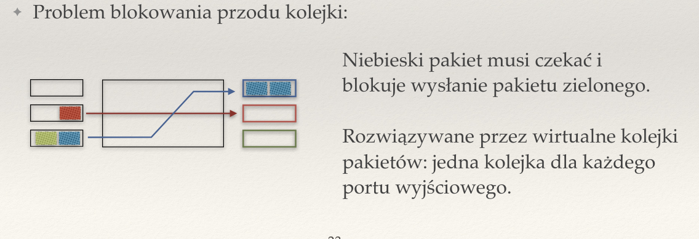
❖ Po co w portach wyjściowych klasyfikuje się pakiety?
By zapewnić sprawiedliwy przesył pakietów danego typu. Pakiety dzieli się na strumienie, bazując na określonej metodzie, np. przypisując im priorytety lub stosując round-robin.
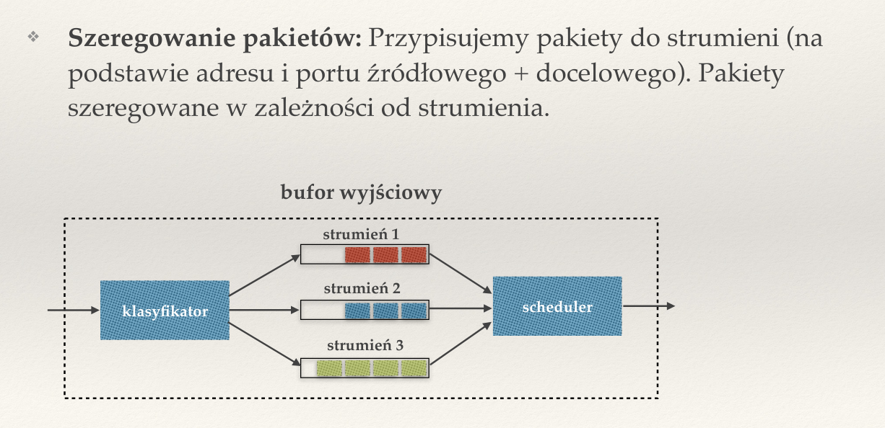
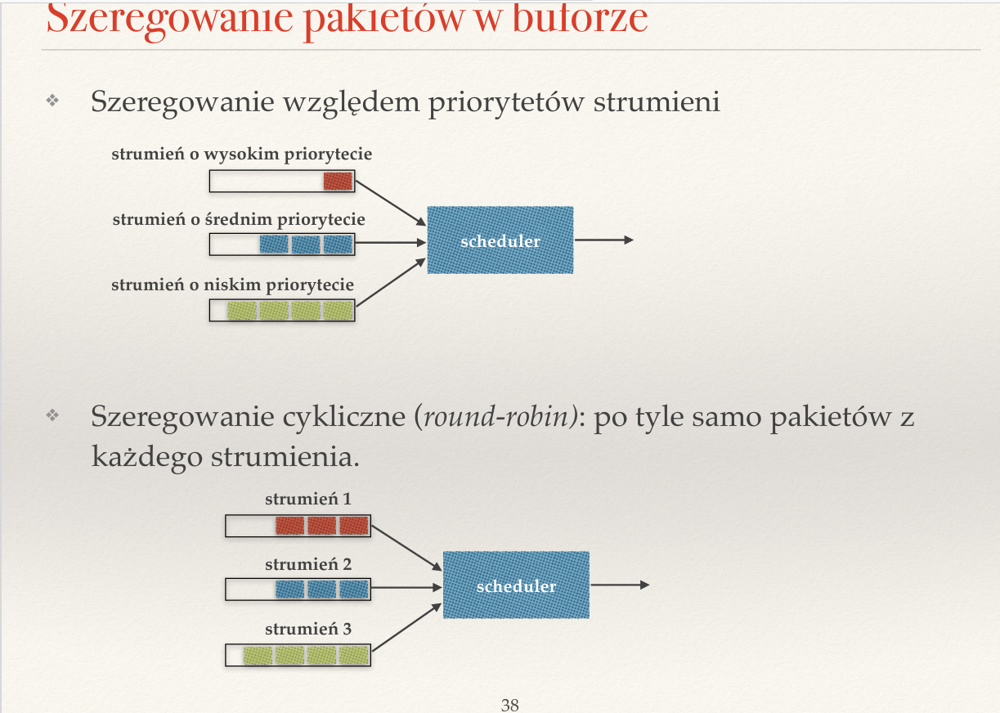
❖ Co to jest blokowanie początku kolejki? Gdzie występuje? Jak się go rozwiązuje?
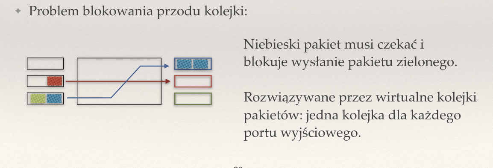
Przypomina samochody, które chcą przejechać przez skrzyżowanie. Jeśli jeden samochód chce jechać w lewo, ale nie może, bo ktoś obok niego jedzie prosto, wtedy wszystkie samochody za nim też nie mogą jechać, nawet jeśli chciałyby jechać prosto.
Rozwiązanie to rozdzielić pakiety przed dotarciem do skrzyżowania, zgodnie z tym, gdzie chcą jechać — stworzyć wirtualne kolejki dla portów wyjściowych.
❖ Rozwiń skrót LPM.
LPM — Longest Prefix Match. Mechanizm dopasowywania pakietów do portów zgodnie z adresem (prefiks CIDR).
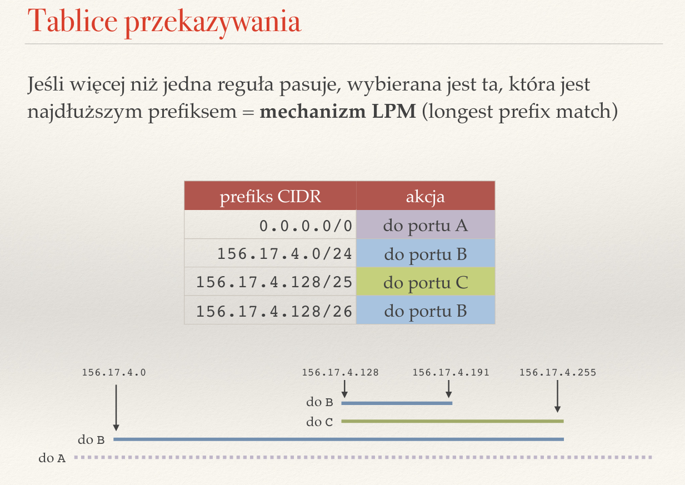
❖ Jakie znasz struktury danych implementujące LPM? Porównaj je.
- Lista prefiksów
- pamięć: O(n)
- lookup: O(n)
- insert: O(1)
- delete: O(n)
- Tablice haszujące
- w+1 tablic (dla każdej długości prefiksów) — w czasach klas adresów IP wystarczało 5 tablic
- pamięć: O(n)
- lookup: O(w) (oczekiwany)
- insert, delete: O(1) (oczekiwany)
- Drzewa trie
- nowe systemy uniksowe, routery sprzętowe
- pamięć: O(n*w) — bo możemy mieć bardzo głęboko jakąś regułkę, i prowadzą do nich ścieżki bez rozgałęzień, kompresja ścieżek bez rozgałęzień daje O(n)
- lookup: O(w)
- insert, delete: O(w)
- Trie z krawędziamy skracającymi
- lookup: O(log w)
- insert, delete: O(n) w najgorszym przypadku
- problem otwarty — czy wszystkie operacje można wykonać w O(log w)?
- Rozwiązania sprzętowe oparte o TCAM (nowsze routery sprzętowe)
- TCAM — ternary content addressable memory
- przechowujemy pary (prefix, maska)
- dla adresu w można równolegle znaleźć wszystkie takie pary, że w&m = p&m (bitowy and), czyli wszystkie pasujące prefiksy
- sprzętowo wybieramy najdłuższy z nich
- istotnie szybsze niż rozwiązania softwarowe
❖ Co to jest pamięć TCAM? Jak można ją zastosować do implementacji LPM?
TCAM — ternary content addressable memory. Rodzaj pamięci wysokiej prędkości, która przeszukuje całą swoją zawartość w jednym cyklu procesora. Ternary w nazwie bierze się stąd, że mamy trzy wartości logiczne — 1, 0 oraz X (don't care). Jest przeciwieństwem pamięci RAM, bo tam gdzie RAM potrzebuje adresu, by znaleźć zawartość, tam CAM potrafi wyszukiwać po zawartości.
Pamięć tę można wykorzystać do implementacji LPM, tworząc w niej pary (prefix, maska), a następnie możemy równolegle odnajdywać w niej wszystkie pary takie, że sieć & maska = prefix & maska, co daje nam wszystkie pasujące prefiksy. Wystarczy wtedy wybrać najdłuższy z nich.
❖ Na czym polega fragmentacja IP? Gdzie się ją stosuje i dlaczego? Gdzie łączy się fragmenty?
Fragmentacja IP to podział pakietu, gdy jego rozmiar jest większy niż MTU łącza wyjściowego. Zachodzi w dowolnym routerze na trasie i polega na dodaniu do podzielonych pakietów dodatkowych metadanych — identyczny identyfikator, flagę, mówiącą czy jest więcej fragmentów oraz offset, czyli numer pierwszego bajtu w oryginalnym pakiecie oraz flagę DF — don't fragment. MTU jest stosowane, by zredukować opóźnienia w sieci — https://en.wikipedia.org/wiki/Maximum_transmission_unit#Tradeoffs.
Stosuje się ją w routerach na portach wyjściowych.
Łączenie fragmentów zachodzi dopiero na komputerze docelowym.
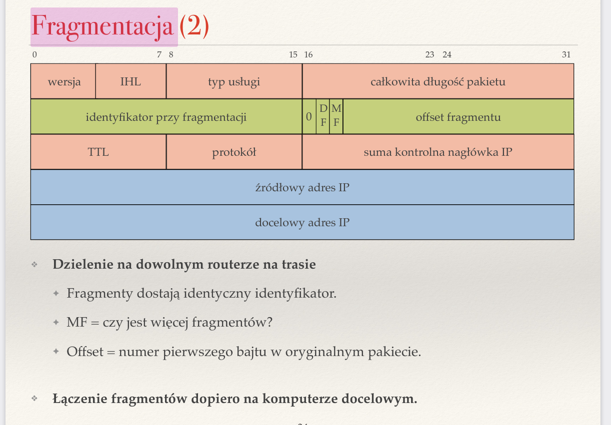
❖ Co to jest MTU? Na czym polega technika wykrywania wartości MTU dla ścieżki?
MTU to maximum transmission unit, czyli największy rozmiar pakietu, jaki jest w stanie przesłać łącze wyjściowe. W przypadku zbyt dużych pakietów można stosować fragmentację, ale jest ona związana z dużym narzutem pamięciowym i czasowym, dlatego lepiej jest wykrywać wartość MTU dla ścieżki.
Technika ta polega na wyszukiwaniu minimalnej wartości MTU na ścieżce. Ustalamy rozmiar pakietów na taką wartość, dzięki czemu unikamy fragmentacji — pakiet na pewno zmieści się w każdym routerze. Jak znaleźć takie minimalne MTU? Podobnie do traceroute:
- Ustawiamy DF (don't fragment) w nagłówku IP.
- Wysyłamy pakiet.
- Jeśli w danym routerze pakiet będzie musiał zostać poddany fragmentacji, wtedy router odrzuca ten pakiet i odsyła komunikat ICMP (destination unreachable, can't fragment) z rozmiarem MTU kolejnego łącza na ścieżce.
- Zmniejszamy rozmiar pakietu i ponownie wysyłamy pakiet.
❖ Jak działa szeregowanie pakietów w buforze wyjściowym routera?
W buforze wyjściowym wyznacza się strumienie — kolejki, w którym umieszczamy pakiety o danym priorytecie. Klasyfikator przesyła pakiety do strumienia o odpowiednim priorytecie, a scheduler wyciąga pakiety ze strumieni i wysyła dalej, zgodnie z ustaloną polityką pierwszeństwa.
Możemy szeregować pakiety względem priorytetów strumieni albo cyklicznie (round-robin), gdzie każdy strumień ma tyle samo pakietów
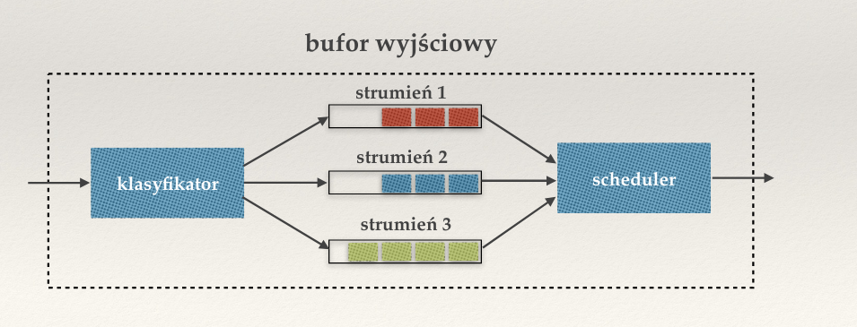
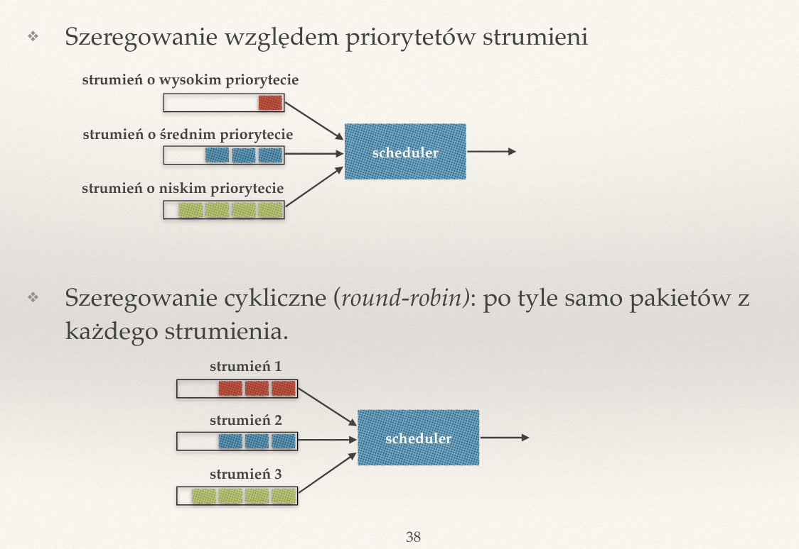
Pakiety powinny mieć stały rozmiar, bo inaczej duze pakiety mogą zajmować dużo czasu, zanim zostaną wysłane, i będą zapychać strumienie.
❖ Jakie są różnice pomiędzy nagłówkami IPv4 i IPv6?
Różnice między IPv4 i IPv6
- adresy mają 32, a nie 128 bitów
- nagłówki w IPv6 mają stałą długość, nie wymagają fragmentacji, sum kontrolnych i posiadają etykietę strumienia (nie trzeba patrzeć na port)
- wszystkie sieci w IPv6 mają maskę /64 — 64 bity na adres sieci i 64 na adres hosta
- wyjątki to łącza dwupunktowe — maski /127
- mniejszy narzut dla routerów w IPv6
- IPv6 ma identyfikator strumienia, który ułatwia pracę routerowi (często routery mają regułki związane z zaporą albo z równoważeniem ruchu, jeśli jest identyfikator, to router nie musi zglądać wgłąb pakietu)
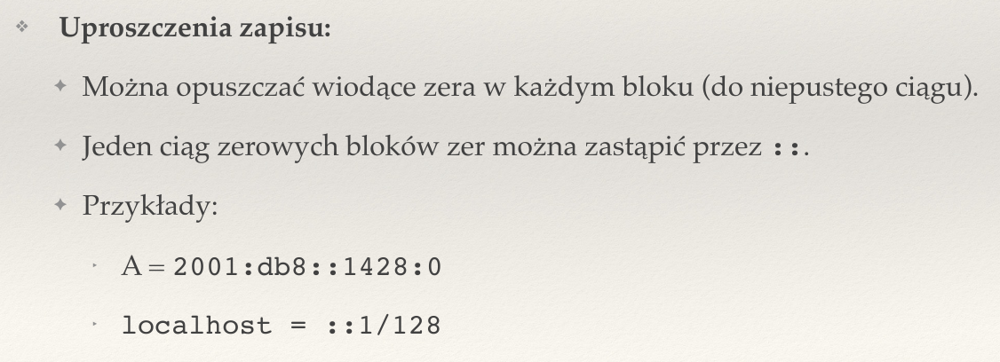
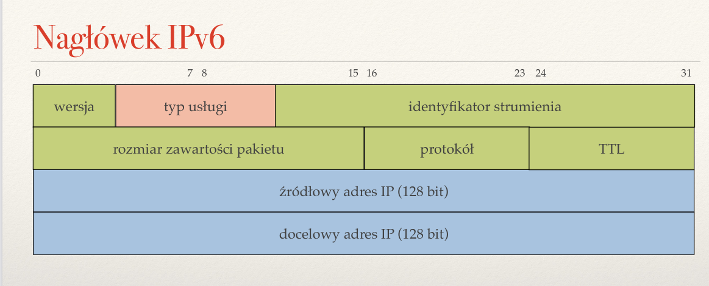
❖ Zapisz adres IPv6 0321:0000:0000:0123:0000:0000:0000:0001 w najkrótszej możliwej postaci.
IPv6 0321:0000:0000:0123:0000:0000:0000:0001 można zapisać krócej jako 321:0:0:123::1
❖ Co to jest tunelowanie 6in4?
Jest to mechanizm migracji między IPv4 a IPv6. Pakiety IPv6 są w nim wysyłane jako dane pakietów IPv4. Pakiety IPv6 są potem wyłuskiwane z pakietów IPv4 przez brokera tunelu. Jest przydatny, ponieważ najczęściej routery w sieciach domowych i ich okolicach nie rozumieją IPv6, więc nie są w stanie przesłać takiego ruchu sieciowego, ale jądro Internetu już je obsługuje, zatem wystarczy tylko przebić się przez ten problematyczny bufor routerów starej daty.
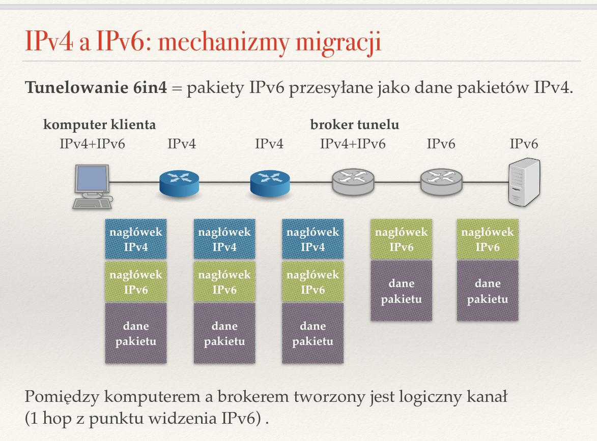
❖ Na czym polega NAT i po co się go stosuje? Jakie są jego zalety i wady?
NAT (network adress translation) — technika routerów na obchodzenie problemu brakujących adresów IP. W obrębie danej sieci lokalnej wszystkie komputery mają prywatne IP, niewidoczne z zewnątrz. Z punktu widzenia Internetu cała sieć lokalna ma jedno IP — jest jednym komputerem.
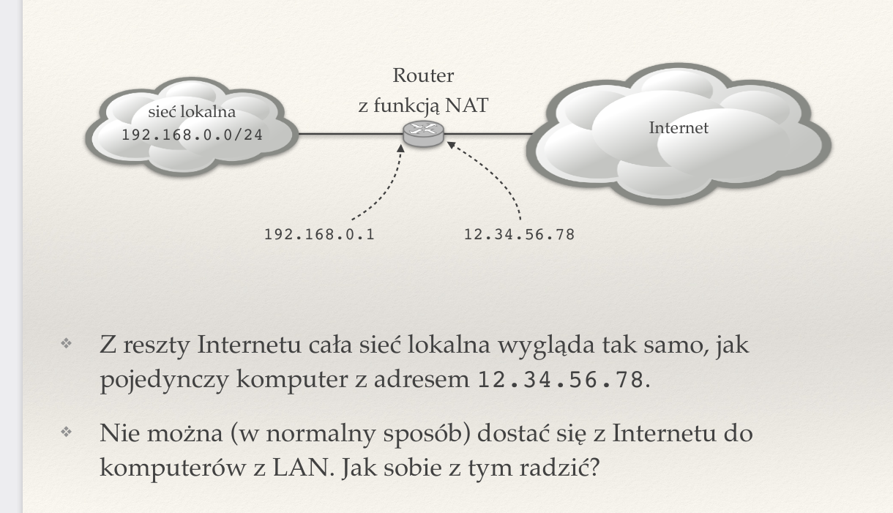
Działanie:
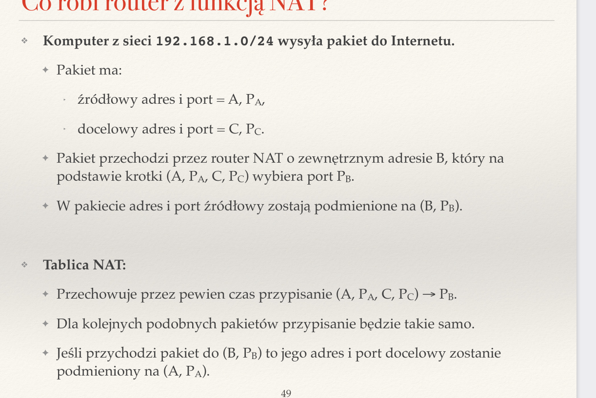f
Zady:
- rozwiązuje problem braku adresów IP
- można zmienić adresy IP wewnątrz sieci bez powiadamiania reszty Internetu
- można zmienić ISP pozostawiając adresowanie IP wewnątrz sieci takim, jakie jest
Walety:
- nieosiągalność komputerów z Internetu (aplikacje P2P)
- psuje model warstwowy (router musi modyfikować treść pakietu)
/pasted_image.png){kind=link}
/pasted_image001.png){kind=link}
/pasted_image002.png){kind=link}
/pasted_image003.png){kind=link}
/pasted_image004.png){kind=link}
/pasted_image005.png){kind=link}
/pasted_image006.png){kind=link}
/pasted_image007.png){kind=link}
/pasted_image008.png){kind=link}
/pasted_image009.png){kind=link}
/pasted_image010.png){kind=link}
/pasted_image011.png){kind=link}
/pasted_image012.png){kind=link}
/pasted_image013.png){kind=link}
/pasted_image014.png){kind=link}
/pasted_image015.png){kind=link}
/pasted_image016.png){kind=link}
/pasted_image017.png){kind=link}
/pasted_image018.png){kind=link}
/pasted_image019.png){kind=link}